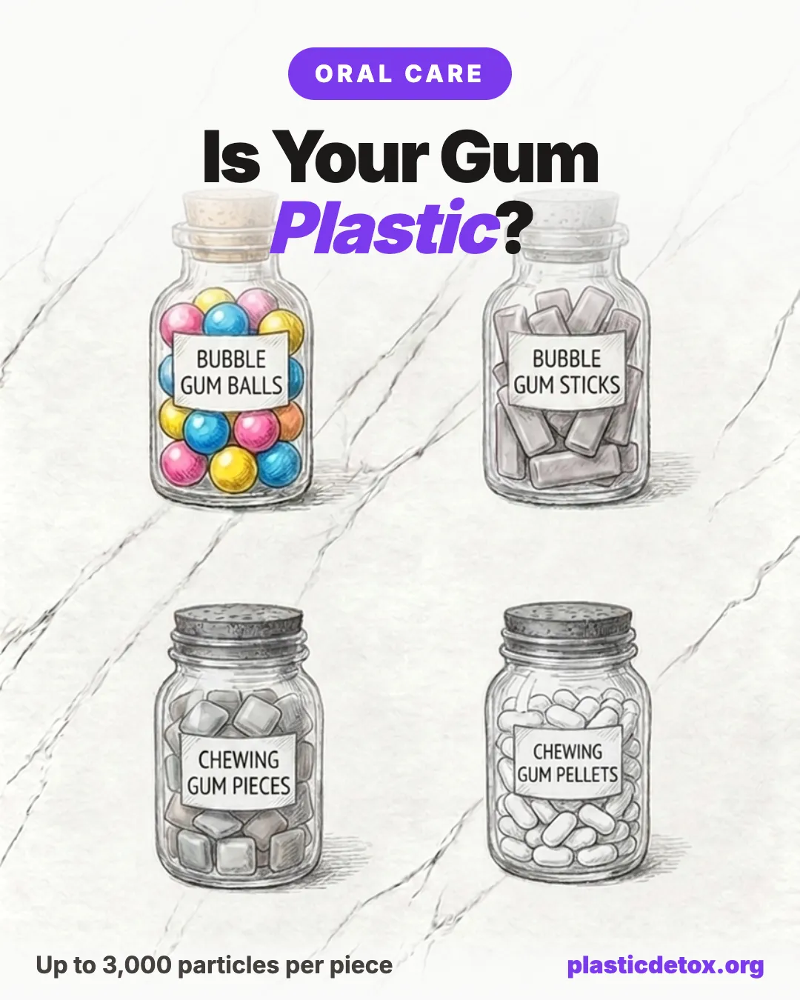

Best Plastic Free Chewing Gum: What the 2025 Study Found (2026)

Here is the part nobody tells you: most chewing gum is made from plastic. The label just calls it "gum base." In 2025, scientists finally measured what that means for your body, and the number is not small.
The 30 Second Summary
- Conventional gum base is synthetic plastic. Think polyethylene, polyvinyl acetate, and polyisobutylene, the same polymer families used in bags, glue, and inner tubes.
- One piece can shed up to 3,000 microplastics into your saliva (2025 study). A regular habit adds up to roughly 30,000 particles a year.
- The fix is chicle, a natural tree sap. Simply Gum is the easiest swap, with a six ingredient list and no synthetic base.
- Want sugar free? Milliways uses a chicle base sweetened with xylitol and stevia.
- The honest catch: natural gum sheds particles too, but they are biodegradable plant matter, not petroleum plastic. The cleanest move of all is simply chewing less.
1. The 2025 Study, in One Chart
Researchers at UCLA presented a pilot study at the American Chemical Society in March 2025. A volunteer chewed gum for four minutes while the team collected saliva every 30 seconds. Then they counted the plastic.
2. Wait, Gum Is Made of Plastic?
Flip over almost any pack of mainstream gum and you will see two words doing a lot of hiding: gum base. That single term is a legal catch all that can contain a mix of synthetic polymers. Manufacturers do not have to tell you which ones.
None of these are illegal or acutely dangerous. But they are petroleum based plastics, they are why gum never biodegrades on a sidewalk, and they are what the 2025 study measured coming loose in your mouth.
3. The Honest Catch: Natural Gum Sheds Too
We are not going to oversell this. The same 2025 study found that natural gums released particles as well. So switching to chicle does not take you to zero. What changes is the kind of particle, and that difference matters.
4. How to Read a Gum Label
You do not need to memorize polymer names. You need to spot two green flags and one red flag.
5. The Best Plastic Free Gums
All three below are built on a natural base instead of a synthetic one. We checked each brand for recalls and contamination issues and found none. Pick by whether you want sugar or sugar free.

Simply Gum
Chicle tree sap base with cane sugar and real plant flavors. Six recognizable ingredients, no synthetic gum base, no aspartame. Paper and cardboard packaging.
View →
Milliways
Natural chicle base sweetened with xylitol and stevia, so it is sugar free and tooth friendly. Eight plant based ingredients, no aspartame, no synthetic base. US brand, widely available.
View →
True Gum
Plant based gum base sweetened with xylitol, so it is sugar free too. No plastic, no aspartame, no titanium dioxide. Made in Denmark, with flavors like mint, licorice, and ginger.
View →| Brand | Base | Sweetener | Synthetic Plastic? |
|---|---|---|---|
| Simply Gum | Chicle | Cane sugar | No |
| Milliways | Chicle | Xylitol + stevia (sugar free) | No |
| True Gum | Plant based | Xylitol (sugar free) | No |
| Most supermarket brands | Synthetic "gum base" | Aspartame / sorbitol | Yes |
6. Beyond the Base: Sweeteners to Watch
Getting the plastic out is the big win. While you are reading the label, two more quick calls:
- Xylitol is a green light for teeth. It is a plant derived sweetener that dentists recommend because it starves the bacteria that cause cavities.
- Skip titanium dioxide. This whitening additive was banned as a food ingredient in the European Union. It shows up in some conventional gum coatings.
7. Frequently Asked Questions
Is chewing gum made of plastic?
Most conventional gum is. The ingredient list usually just says "gum base," which is a legal umbrella term that can include synthetic polymers such as polyethylene, polyvinyl acetate, and polyisobutylene. These are the same families of plastic used in shopping bags, wood glue, and inner tubes. Brands are not required to spell out which polymers the gum base contains.
Does chewing gum release microplastics?
Yes. A 2025 pilot study presented at the American Chemical Society found that chewing gum releases an average of around 100 microplastic particles per gram, and some pieces released up to 600 per gram. A large piece could shed up to 3,000 particles into your saliva, and a regular habit could add up to roughly 30,000 particles a year.
What is the best plastic free chewing gum?
The best options use chicle, a natural tree sap, instead of a synthetic gum base. Simply Gum uses chicle with a short real ingredient list, Milliways uses a chicle base sweetened with xylitol and stevia so it is sugar free, and True Gum offers a wide flavor range. All of them avoid the petroleum based synthetic polymers found in conventional gum.
Does natural chicle gum still release particles?
The 2025 study found that natural gums also shed particles during chewing. The difference is what those particles are. Chicle is a plant polymer that biodegrades and does not carry the petroleum origins or plasticizer additives of a synthetic base. So chicle gum is the better choice, but the cleanest option of all is to chew less gum.
Is xylitol gum safe?
Xylitol is a plant derived sweetener that is safe for people and is actually good for teeth, which is why many dentists recommend it. The one serious caution is that xylitol is highly toxic to dogs, so keep xylitol gum well out of a pet's reach.
Related Articles
- How to Avoid Microplastics in Tea
Plastic tea bags release billions of particles per cup. The safer way to brew. - The Cleanest Non Toxic Toothpaste
What to look for and what to skip for the rest of your mouth. - Microplastics in Salt and Pantry Staples
Which everyday foods carry the most plastic, and the cleaner swaps. - Can You Detox Microplastics?
What the science says about clearing plastic particles from your body.